<title>Footer Animal by the Sign</title>
<meta name="claude:viewport-fit-sides" content="cover">
<link rel="preconnect" href="https://fonts.googleapis.com">
<link rel="preconnect" href="https://fonts.gstatic.com" crossorigin>
<link rel="stylesheet" href="https://fonts.googleapis.com/css2?family=Ysabeau:wght@500;650&display=swap">
<style>
  /* Layout: one column; today's crane first, then each animal: its words, then the laptop and
     phone footers of the real homepage and a close-up. */
  :root {
    --paper: #f6f1e7;
    --ink: #1d1b18;
    --ink-soft: #5d574e;
    --rule: #ddd4c4;
    --gold: #a77c25;
    --pick: #2f4a3a;
    --title: "Ysabeau", "Palatino Linotype", Palatino, Georgia, serif;
    --body: system-ui, -apple-system, "Segoe UI", Roboto, sans-serif;
  }
  @media (prefers-color-scheme: dark) {
    :root:not([data-theme="light"]) {
      --paper: #1b1a17; --ink: #f1ece2; --ink-soft: #b9b0a2;
      --rule: #3a3630; --gold: #d6aa52; --pick: #9cc3a8; color-scheme: dark;
    }
  }
  :root[data-theme="dark"] {
    --paper: #1b1a17; --ink: #f1ece2; --ink-soft: #b9b0a2;
    --rule: #3a3630; --gold: #d6aa52; --pick: #9cc3a8; color-scheme: dark;
  }
  body {
    background: var(--paper);
    color: var(--ink);
    font: 17px/1.55 var(--body);
    padding-left: max(16px, env(safe-area-inset-left, 0px));
    padding-right: max(16px, env(safe-area-inset-right, 0px));
  }
  main { max-width: 1100px; margin: 0 auto; padding-block: 40px 72px; display: grid; gap: 52px; }
  h1, h2 { font-family: var(--title); font-weight: 650; text-wrap: balance; margin: 0; letter-spacing: -0.01em; }
  h1 { font-size: clamp(34px, 6vw, 52px); line-height: 1.05; }
  h2 { font-size: clamp(26px, 4vw, 34px); line-height: 1.1; }
  p { margin: 0; max-width: 62ch; }
  ul { margin: 0; padding-left: 1.2em; max-width: 62ch; color: var(--ink-soft); display: grid; gap: 4px; }
  .intro { display: grid; gap: 12px; }
  .intro p { color: var(--ink-soft); font-size: 18px; }
  .choice { display: grid; gap: 14px; padding-top: 26px; border-top: 1px solid var(--rule); }
  .head { display: flex; flex-wrap: wrap; align-items: baseline; gap: 10px 16px; }
  .letter { font-family: var(--title); font-size: clamp(44px, 7vw, 60px); line-height: 0.8; color: var(--gold); font-weight: 650; }
  .score { font: 600 15px/1 var(--body); font-variant-numeric: tabular-nums; padding: 7px 11px; border: 1px solid var(--rule); border-radius: 999px; color: var(--ink-soft); }
  .tag { font: 600 13px/1 var(--body); letter-spacing: 0.06em; text-transform: uppercase; color: var(--paper); background: var(--pick); padding: 7px 10px; border-radius: 999px; }
  .what { font-size: 18px; }
  .note { color: var(--ink-soft); }
  .shots { display: grid; grid-template-columns: 3fr 1fr; gap: 12px; align-items: start; }
  figure { margin: 0; display: grid; gap: 6px; min-width: 0; }
  figure img { display: block; width: 100%; height: auto; border: 1px solid var(--rule); border-radius: 6px; }
  figcaption { font-size: 13px; color: var(--ink-soft); letter-spacing: 0.02em; }
  @media (max-width: 640px) {
    .shots { grid-template-columns: 1fr; }
    .shots figure:last-child { width: 62%; }
  }
  .scene { display: grid; gap: 12px; padding-top: 34px; border-top: 3px solid var(--ink); }
  .scene-title { font-size: clamp(30px, 5vw, 42px); }
  .before { width: min(100%, 640px); }
</style>
<main>
  <header class="intro">
    <h1>The quail and the bear, as paintings</h1>
    <p>You asked for the quail and the bear cub to look more like paintings. Each is painted again two ways, in the two hands you already picked for the homepage, and laid on the real footer. The sign, its poppy and the words stay.</p>
    <ul>
      <li><b>1, wet wash:</b> a few soft wet washes, like the hummingbird at the top of the homepage.</li>
      <li><b>2, ink and wash:</b> brush lines with pale colour over them, like the Big Sur painting at its end.</li>
      <li>On a phone the sign keeps its seven lines. B, the tortoise, is as it was.</li>
    </ul>
  </header>
  <section class="choice" aria-labelledby="built-name">
    <div class="head">
      <span class="letter">A1</span>
      <h2 id="built-name">Built on the real site</h2>
      <span class="score">9 / 10</span>
      <span class="tag">Your pick</span>
    </div>
    <p class="what">The wet-wash quail now stand by the park sign on every page. Not live yet: this is the site built on your computer.</p>
    <p class="note">On a phone they stay inside the edge of the screen, and the sign keeps its seven lines.</p>
    <div class="shots">
      <figure><figcaption>Laptop, homepage</figcaption></figure>
      <figure><figcaption>Phone, homepage</figcaption></figure>
    </div>
    <figure>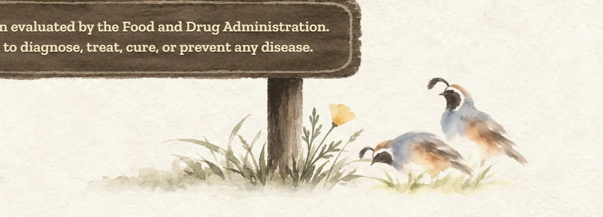<figcaption>Close-up, Science page, full size</figcaption></figure>
  </section>
  <section class="scene" aria-labelledby="a-scene">
    <h2 id="a-scene" class="scene-title">A, the quail</h2>
    <figure class="before">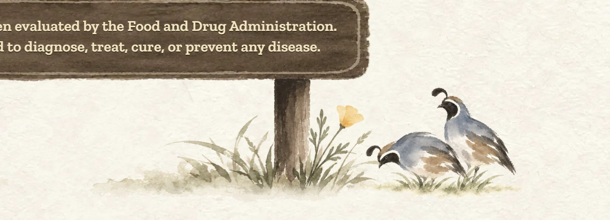<figcaption>Last round, close-up</figcaption></figure>
  </section>
  <section class="choice" aria-labelledby="a1-name">
    <div class="head">
      <span class="letter">A1</span>
      <h2 id="a1-name">Wet wash</h2>
      <span class="score">9 / 10</span>
      <span class="tag">My pick</span>
    </div>
    <p class="what">A few soft wet washes and no outlines, like the hummingbird at the top of the homepage. The most painted of the four.</p>
    <p class="note">Softer and paler than before, so it sits quietly next to the dark sign.</p>
    <div class="shots">
      <figure>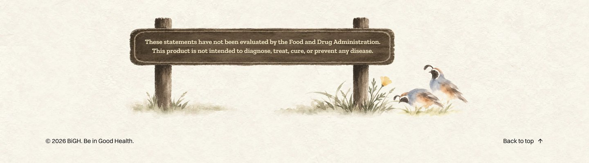<figcaption>Laptop</figcaption></figure>
      <figure>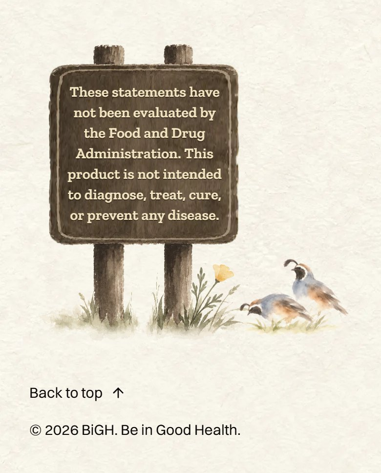<figcaption>Phone</figcaption></figure>
    </div>
    <figure>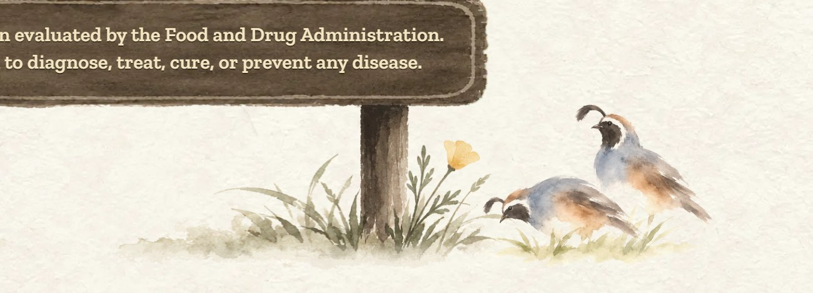<figcaption>Close-up, full size</figcaption></figure>
  </section>
  <section class="choice" aria-labelledby="a2-name">
    <div class="head">
      <span class="letter">A2</span>
      <h2 id="a2-name">Ink and wash</h2>
      <span class="score">8.5 / 10</span>
      
    </div>
    <p class="what">Brush lines with pale colour laid over them, like the Big Sur painting at the end of the homepage. Their legs and feet show.</p>
    <p class="note">A little more drawn than A1; up close, the fine lines around the eyes are busy.</p>
    <div class="shots">
      <figure>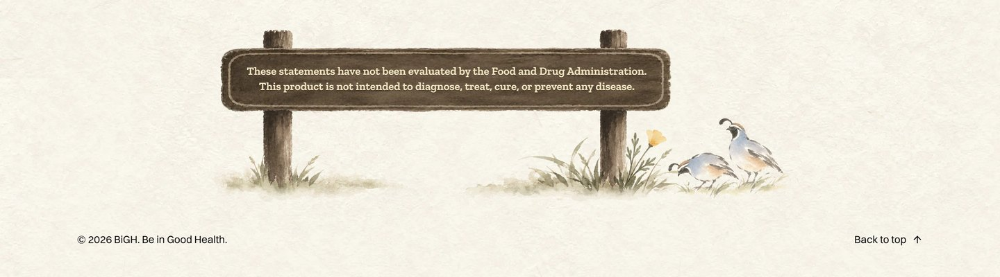<figcaption>Laptop</figcaption></figure>
      <figure>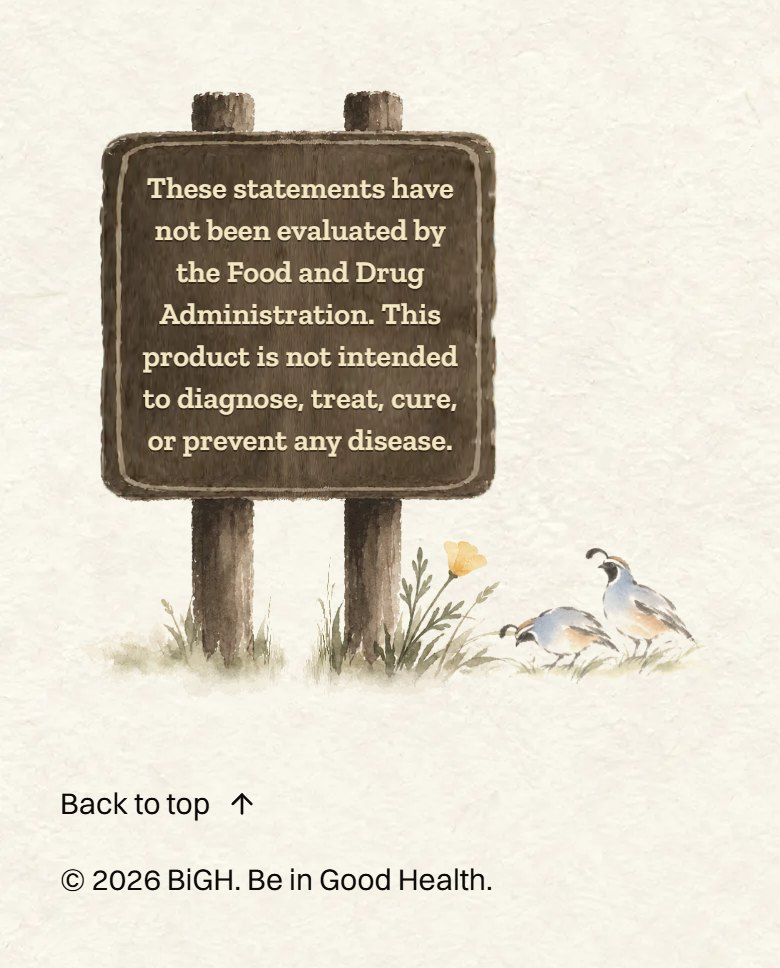<figcaption>Phone</figcaption></figure>
    </div>
    <figure>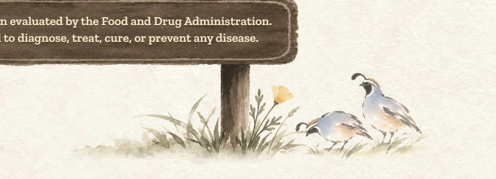<figcaption>Close-up, full size</figcaption></figure>
  </section>
  <section class="scene" aria-labelledby="c-scene">
    <h2 id="c-scene" class="scene-title">C, the bear cub</h2>
    <figure class="before">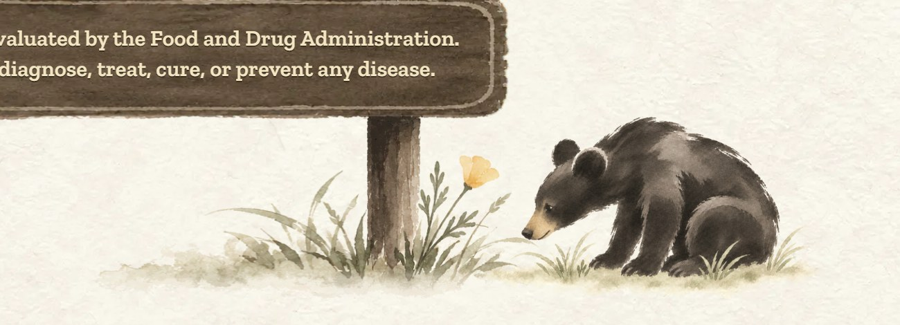<figcaption>Last round, close-up</figcaption></figure>
  </section>
  <section class="choice" aria-labelledby="c1-name">
    <div class="head">
      <span class="letter">C1</span>
      <h2 id="c1-name">Wet wash</h2>
      <span class="score">8.5 / 10</span>
      
    </div>
    <p class="what">Soft brown washes, like the hummingbird. It reads as a grizzly cub, the bear on California's flag.</p>
    <p class="note">Softer and lighter than before, so it pulls less on your eye; still the biggest thing in the footer, and its body is a little long.</p>
    <div class="shots">
      <figure>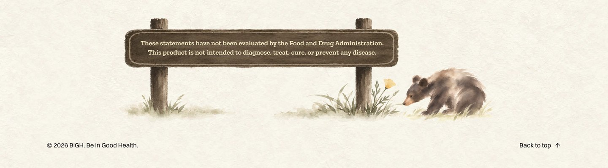<figcaption>Laptop</figcaption></figure>
      <figure>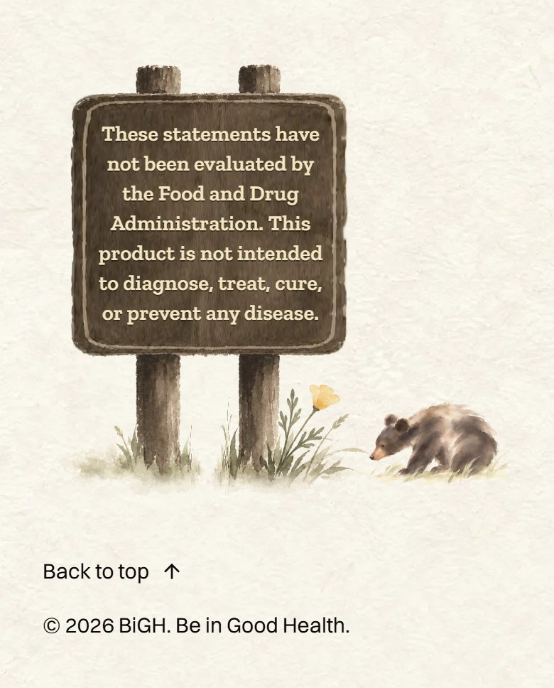<figcaption>Phone</figcaption></figure>
    </div>
    <figure>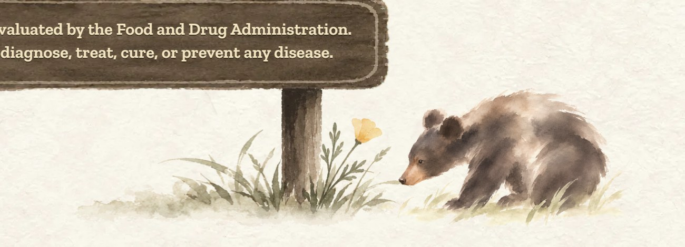<figcaption>Close-up, full size</figcaption></figure>
  </section>
  <section class="choice" aria-labelledby="c2-name">
    <div class="head">
      <span class="letter">C2</span>
      <h2 id="c2-name">Ink and wash</h2>
      <span class="score">7 / 10</span>
      
    </div>
    <p class="what">Bold black ink with bare paper left as the light, like the Big Sur painting.</p>
    <p class="note">At footer size the bare patches on its back look like markings, like a badger.</p>
    <div class="shots">
      <figure>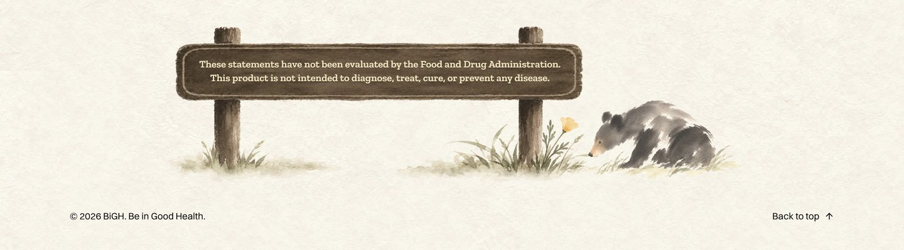<figcaption>Laptop</figcaption></figure>
      <figure>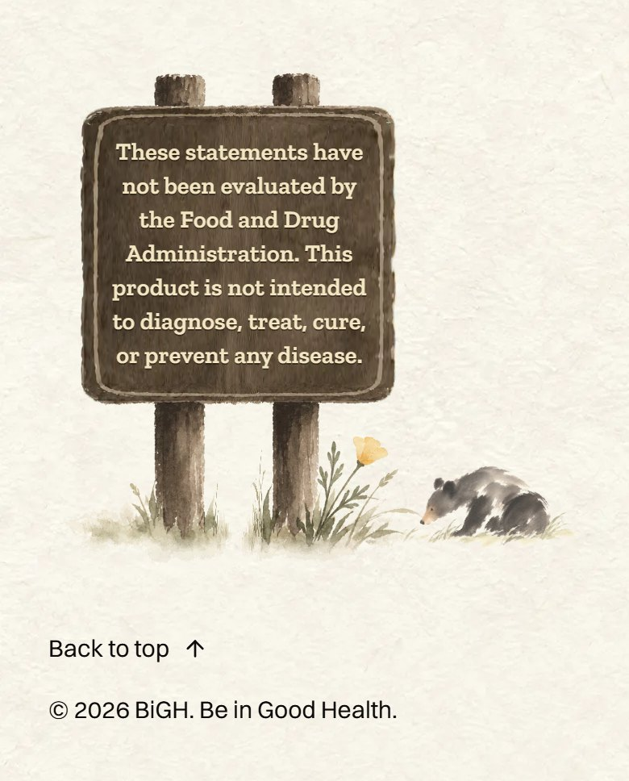<figcaption>Phone</figcaption></figure>
    </div>
    <figure>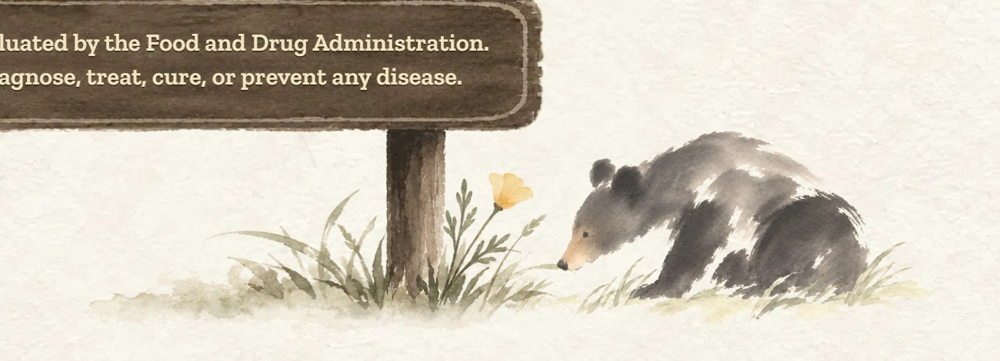<figcaption>Close-up, full size</figcaption></figure>
  </section>
</main>
